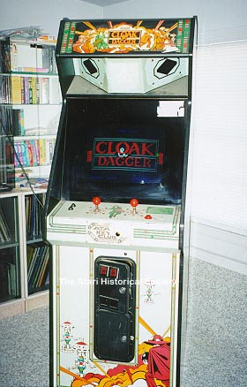

Before Atari was sold the the Tramiels, they worked on providing prop's
and technical assistance for a movie called Cloak & Dagger.
Atari at the time was working on a prototype of a coin-op game called Agent
X which they renamed Cloak & Dagger for the movie. Also
used in the movie was the Atari 5200 Supersystem and the main prop was
a video game cartridge of Atari Cloak & Dagger for the Atari 5200 system.
Another part of the movie shows development work being done on an Atari
800 home computer system. Atari also had many props set
up in the Video Game/Dungeons & Dragon store such as boxes from Cloak
& Dagger and also boxes for Tempest for the Atari 5200.